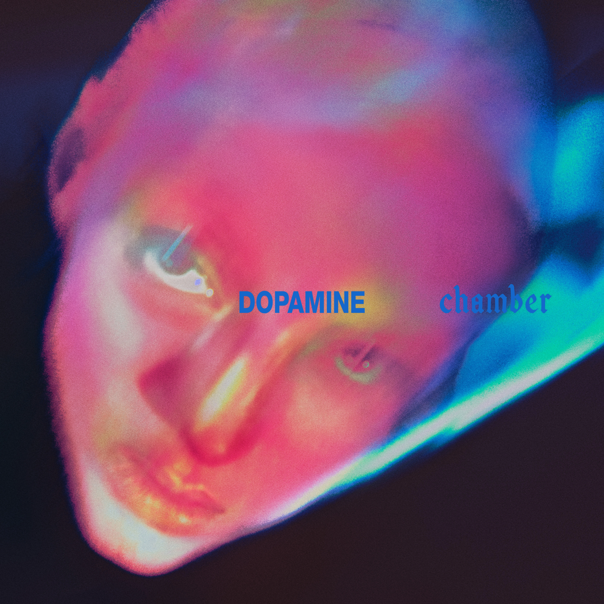
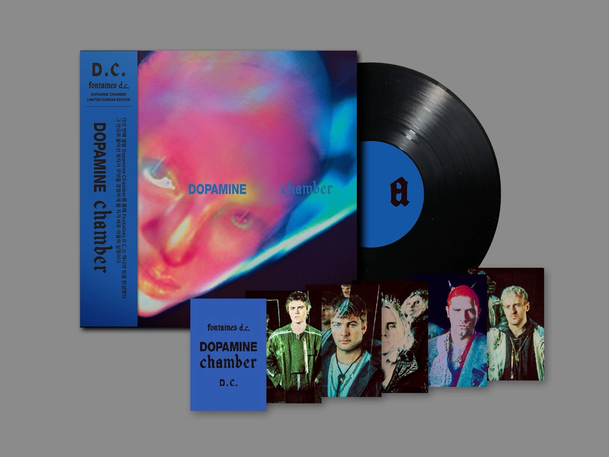
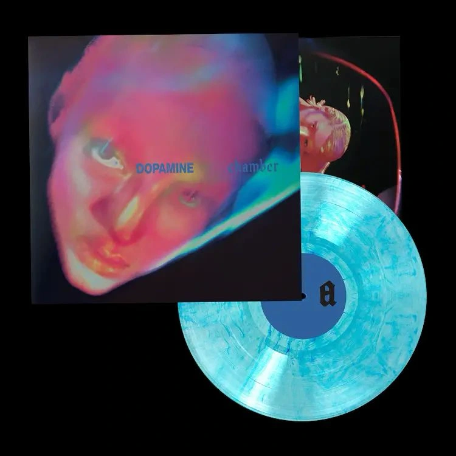
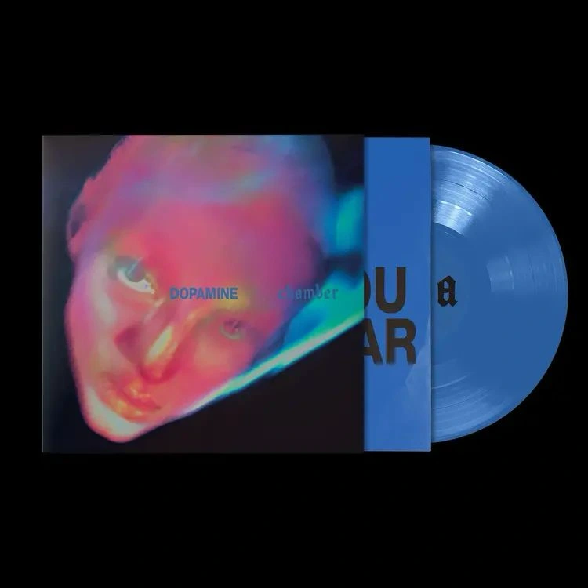
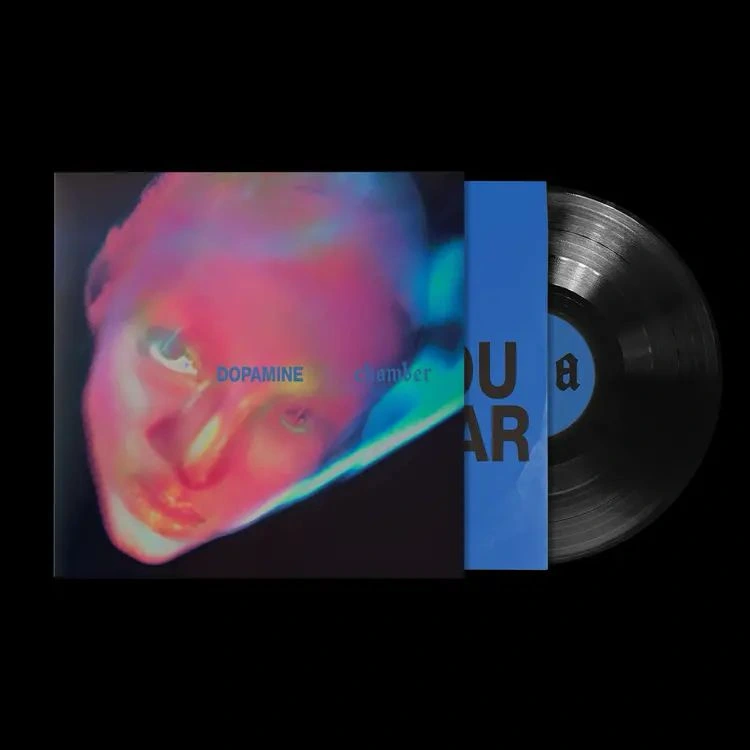
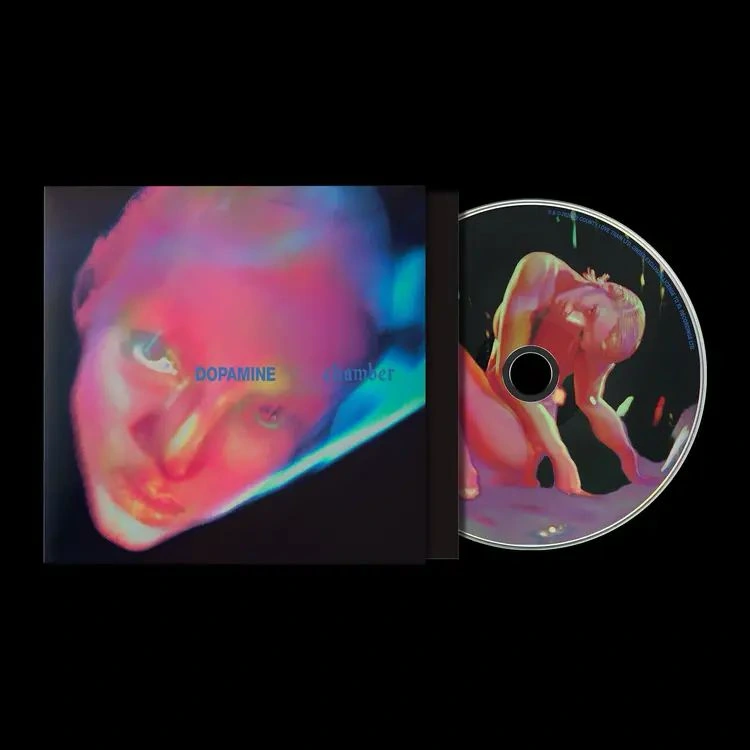
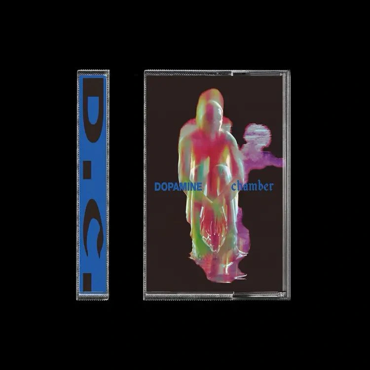

ALBUM BIO
로맨스는 굳어지고, 이내 먼지처럼 부서져 목을 막는 짧은 숨과 함께 들이마셔진다. 먹이 한 알을 더 얻으려 레버를 당기는 쥐의 뇌에서는 쾌감의 신호가 켜진다. 베네치아는 더러운 운하에 서서히 잠겨가지만, 닫힌 문 뒤에서는 가면을 쓴 이들의 향락이 계속된다. Fontaines D.C.의 다섯 번째 앨범 《Dopamine Chamber》는 일렁이는 스모그 너머의 별자리처럼 모습을 드러낸다. 짙은 안개 사이로 힘 있는 발라드와 함께 따라 부르게 되는 선율이 빛난다. 붕괴를 향해 기우는 세계에서 이 앨범은 묻는다. 위험 속에서 쾌락은 어떻게 변하는가. 그리고 그것을 좇는 우리의 모습은 무엇을 드러내는가.
첫 곡 ‘Six Shot Morning’은 Prophet 신시사이저의 매혹적인 빛으로 문을 연다. 그러나 《Romance》의 대담한 기세가 있던 자리에는 불길한 기운이 들어서 있다. 울컥대는 베이스 루프 위로 그리언 채튼은 냉정한 바리톤으로 노래한다. “실리콘밸리가 사진을 찍었지 / 10피트짜리 욕조에서 갈라진 혀로 입을 맞추며 / 너와 나는 백만 년을 살아가네 / 언제나, 언제나.” 그가 이 가사를 쓸 무렵, 밴드는 화면을 통해 쏟아지는 불안한 정보에 압도돼 있었다. 인공지능과 환경 붕괴, 극단적인 부와 정치적 폭력이 밈과 농담, 유명인 소식과 똑같은 알고리즘을 타고 밀려왔다. “우리는 쾌락을 손쉽게 소화할 수 있는 형태로 정제했어요. 휴대전화로 스스로에게 도파민을 처방할 수 있다는 건 꽤 기괴하죠. 인류가, 혹은 더는 인류라 부르기 어려운 무언가가 전혀 다른 형태로 바뀌기 직전에 서 있다는 느낌이 뼈아프게 다가와요.”
앨범 제목은 처음에는 가사의 한 구절이었다. 이후 곡의 제목이 됐지만, 그 곡은 최종 수록곡에서 빠졌다. 그래도 그 안에 담긴 감각은 남았다. “앨범 자체가 하나의 도파민 체임버예요. 그 안으로 들어오면 우리는 생각이나 기분을 바꾸는 여러 음악을 여러분에게 들려주며 실험하는 거죠.”
READ THE FULL BIOCLOSE THE BIO
그리언 채튼, 카를로스 오코넬, 코너 컬리, 코너 디건(디고), 톰 콜. 다섯 멤버는 열한 곡에 걸쳐 쾌락과 두려움 사이를 오가고, 끝내 둘의 경계는 흐려진다. 신시사이저는 독이 밴 입맞춤처럼 위안을 건네고, 코드 진행은 피어났다가 시든다. “《Romance》가 60퍼센트쯤 인간적이고, 나머지 40퍼센트는 자동화와 감각의 상실에 잠식된 음반이었다면, 이번에는 잠식된 쪽이 60퍼센트에 가까워요. 이제는 가면이 얼굴을 쓰고 있는 느낌이 조금 더 강하죠.”
《Dopamine Chamber》는 초기 음반의 구체적인 지역성과 거친 기타 언어에서 멀어지는 흐름을 이어간다. 《Dogrel》(2019)은 으르렁대는 시어와 거침없는 네 코드의 찬가를 결합했고, 《A Hero’s Death》(2020)와 차트 1위를 기록한 《Skinty Fia》(2022)는 더 대담하고 낯선 소리로 나아갔다. 《Romance》(2024)에 이르러서는 규칙에 얽매이지 않는 다채로운 음악으로 큰 전환을 이뤘다. 주제와 불안 역시 자리를 옮기고 새로운 형태로 뻗어나갔다. 디고는 말한다. “우리 앨범은 늘 장소에 대한 감각을 물었어요. 처음에는 더블린, 그다음에는 더블린을 떠나 있다는 것, 이후에는 다른 곳에서 로맨스를 찾는 일이었죠. 이번 음반에서는 질문이 이렇게 바뀌었어요. 어디로 도망칠 수 있을까?” 자기 내면일 수도, 쾌락이나 환상, 외모의 완벽함과 영원한 젊음, 끝없이 새로고침되는 화면일 수도 있다.
《Dopamine Chamber》가 바라보는 세계는 전례 없이 많은 정보와 연결돼 있으면서도, 사람과 사람 사이는 점점 멀어진다. 모든 것이 관심을 요구하지만, 어느 것도 그에 걸맞은 감정의 무게로 받아들여지지 않는다. 채튼은 말한다. “모든 게 있으니 아무것도 없는 것과 같아요. 아침에 눈을 떠 휴대전화를 보면 곧바로 끔찍한 일을 마주하죠. 그런데 그 옆에는 가벼운 콘텐츠가 나란히 있어요. 그렇게 감각이 무뎌지는 거예요. 세상은 점점 그 일부를 사들일 여유가 있는 사람들, 어떤 대가를 치르더라도 영원히 살려는 사람들에게 맞춰지고 있어요. 죽음과 인간다움, 감수성에서 벗어나려는 사람들의 모습에 압도됐어요. 쇠락을 막으려는 몸짓이 그 자체로 쇠락의 징후가 되는 거죠.” 디고는 음반 작업의 마지막 몇 달 동안 아예 온라인 세계에서 거리를 뒀다.
한때 앨범의 제목은 《Submission》이 될 예정이었다. 그 이름은 바뀌었지만, 굴복이라는 개념은 여전히 앨범 깊숙이 남아 있다. 편안함은 거듭 불길한 초대의 얼굴로 나타난다. 지금 벌어지는 일을 잊고, 책임을 내려놓고, 다른 누군가가 당신의 상상력을 차지하도록 내버려두라는 것이다. 고양감 넘치는 싱글 ‘Marianne’은 망각에서 벗어날 길을, 혹은 망각으로 향할 길을 약속하는 세이렌의 노래다. “올해는 이곳에 와서 지내 / 나를 따라오면 돼 / 네가 사라질 수 있게 도와줄게.”
그러나 채튼은 이런 경고를 손쉬운 낙관으로 마무리하고 싶지 않았다. “희망을 덜어내고 추한 모습을 정직하게 비추는 편이 더 힘이 있다고 느꼈어요. 희망을 걸 만한 무언가를 보여주면, 그때 그런 앨범을 쓰겠어요. 이번 음반은 재앙을 알리는 경고에 더 가까워야 했죠.”
‘One Man’에서 그는 단언한다. “도파민 체임버, 그저 고통을 지우려 할 뿐 / 한 번 이름 붙인 감정에서는 벗어날 수 없어.”
음악적으로 이 경고는 지난 시대의 아름다움과 그것을 침식하는 힘이 부딪치는 곳에서 태어난다. 채튼은 이탈리아 가수 미나의 음악을 집요하게 들었다. 풍성하게 펼쳐지는 편곡과 가공하지 않은 목소리는 1960년대 팝이 지닌 인간적인 면을 선명하게 보여줬다. 밴드는 그 위에 다크웨이브와 SF, 산업적인 질감의 바디 호러를 겹쳤다. 영화 《에이리언》, 《스토커》, 《철남》, 사프디 형제의 작품과 Oneohtrix Point Never의 음악도 영감이 됐다. “음악의 디스토피아적인 면이 60년대 이탈리아 팝, 그 현악기와 낭만을 먹어치운 뒤 인공적인 복제품으로 토해내는 듯한 느낌을 원했어요.”
《Romance》에서 멜로트론이 전자음악으로 향하는 문을 열었다면, 이번에 밴드는 그 악기가 주는 익숙한 향수를 피하고자 했다. 신시사이저는 더 차가운 빛을 내고, 드럼은 파국을 향해 행진한다. 오코넬은 신시사이저 장비를 확장했고, 컬리는 듣자마자 과거의 특정 음악이 떠오르지 않는 기타 소리를 찾았다. 《Romance》 투어 사이의 휴식기, 컬리는 혼자 여행하며 호텔에서 곡을 쓰고 온라인에서 지금의 침실에서 만들어지는 음악을 발견했다. “‘The Cure 같은데’라든지, 과거의 무언가가 곧바로 떠오르는 기타 소리를 줄이고 싶었어요. 미래를 향하는 소리를 찾으려 했죠.”
DJ 활동도 컬리와 콜, 오코넬에게 밴드의 기존 언어를 넘어설 새로운 길을 열어줬다. 컬리는 전자음악의 점진적인 변화를 흡수했고, 콜은 1980년대와 소련 시절의 드럼머신 샘플에 실제 타악기 연주를 겹쳤다. 디고는 프린스에게서 영감을 얻은 테이프 속도 조절 기법으로 ‘Tongue’와 ‘You Miss Me’의 느슨하게 처지는 베이스를 만들었다. 곡들은 먼저 신시사이저와 필터, 샘플을 통해 형태를 갖췄고, 밴드 전체의 연주 편곡은 그 뒤에 더해졌다. “《Romance》가 끝난 지점에서 이어갔어요. 실제 밴드 연주는 꼭 필요해질 때까지 남겨뒀죠.” 컬리의 설명이다.
《Romance》의 대규모 월드 투어 일정을 벗어난 밴드는 2025년 겨울, 런던에서 진행한 프리프로덕션 기간에 대부분의 음악을 함께 썼다. 가사의 풍경은 이듬해 봄, 채튼이 유럽을 여행하면서 자리를 잡았다. 빈에서는 프로이트 박물관을 방문하고 아르투어 슈니츨러의 《꿈의 노벨레》를 읽었으며, 레오폴트 미술관에서 에곤 실레와 구스타프 클림트의 작품을 마주했다. “오래된 유럽의 아름다움과 지나칠 만큼의 호사, 그 세계 전체가 앨범으로 흘러들었어요.”
베네치아는 앨범을 관통하는 비유가 됐다. 아름답지만 무너지고 가라앉는 도시. 그 보물들은 관광을 통해 보존되는 동시에 소비된다. 채튼은 프레스코화로 장식된 성당 안에서 가사를 썼고, 바깥 광장에서는 여행 가방 바퀴가 덜컹거렸다. “너무 노골적인 비유처럼 느껴질 정도였어요. 일시적이고 상품화돼 있으며 손에 닿지 않는 듯한 장소 안에, 시간을 초월한 예술이 가득했죠.”
팔레르모는 그 반대편의 풍경을 보여줬다. 혼란스럽지만 살아 있는 도시였다. “사람들이 실제로 살아가는 곳처럼 느껴졌어요.” 《Romance》를 함께 만든 프로듀서 제임스 포드가 그곳에 합류해 매트리스와 쿠션으로 임시 부스를 만들고 보컬을 녹음했다. ‘One Man’의 현악기가 잦아들 때면, 팔레르모 대성당 밖에서 소리를 지르며 축구하는 아이들의 목소리가 멀리서 녹음 속으로 스며든다.
밴드 초창기 채튼은 말과 노래 사이에 놓인, 다급하고 표현적인 창법으로 시적인 가사를 쏟아냈다. 《Romance》와 《Dopamine Chamber》를 거치며 그는 자신의 자연스러운 음역에 맞는 리듬을 찾았다. “나이를 조금 더 먹으면서 목소리가 제자리를 찾은 것 같아요. 실제로 말할 때의 목소리에 더 가까워졌죠. 처음에는 높은음을 못 낸다는 걸 너무 의식해서, 어떻게든 더 높게 부르려고 늘 밀어붙였어요. 지금은 말할 때의 음역에서 더 자주 노래해요. 정말 편안한 곳이죠. 그 안에 더 자연스러운 울림이 있는 것 같아요. 그것 자체로도 하나의 비유가 되지 않나요?”
《Dopamine Chamber》에는 지금까지 채튼이 선보인 가장 과감한 보컬이 담겼다. 그중 하나가 로살리아와 함께한 웅장한 오케스트라 듀엣 ‘Where Is Gone?’이다. 이 협업에는 최근 자신의 스페인 뿌리와 다시 연결되고 있던 오코넬이 다리 역할을 했다.
밴드는 어느 때보다 많은, 약 40곡을 썼다. 아이디어는 합쳐지고 변형됐으며 서로를 흡수했다. “어떤 아이디어가 존재하려면 다른 하나가 사라져야 할 때도 있어요.” 컬리는 말한다. 밴드는 포드와 함께 영국 시골에 머물며 앨범을 완성했다. 활동 초기였다면 갖기 어려웠을 인내심으로 까다로운 곡들을 다뤘다. 멤버들은 이번 음반이 지금까지 가장 긴밀하게 협업한 결과물이라는 데 의견을 같이한다.
그 결과 무대도 이전보다 복잡해졌다. MIDI와 샘플, 트리거를 활용하고, 기타가 전혀 등장하지 않는 곡도 있다. 밴드는 여전히 이 앨범이 자신들에게 무엇을 뜻하는지 알아가는 중이며, 라이브 공연을 만들어가면서 그 의미를 계속 구체화할 것이다. “위험을 감수하는 부분이 없으면 오히려 불편해요.” 채튼은 말한다. “앨범이 나오기 전에는 질문이 있고, 이어서 답이 있어야겠죠. 하지만 저는 사람들이 예상한 길에서 살짝 벗어나는 게 좋아요.”
《Dopamine Chamber》는 질문을 미해결로 남겨두지만, 그 이미지들은 오래 머문다. 별인 척하는 인공위성, 오염된 물속으로 가라앉는 궁전, 불타는 세계를 바라보다 다시 화면을 넘기는 사람. Fontaines D.C.는 방을 완성했다. 그 안에서 듣는 이에게 무슨 일이 일어날지, 실험은 거기서 시작된다.
ALBUM PRE ORDER
이미지를 터치하면 구매페이지로 이동됩니다.





